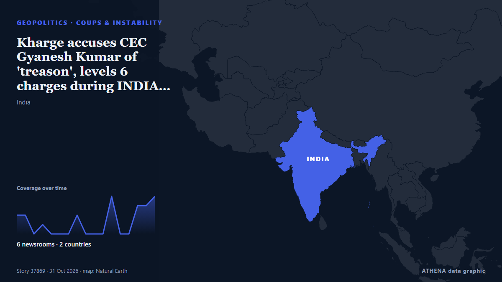

Kharge accuses CEC Gyanesh Kumar of 'treason', levels 6 charges during INDIA bloc's mock impeachment

During the mock parliament held by INDIA bloc to publicly impeach Gyanesh Kumar, Kharge accused the CEC of being part of a “conspiracy orchestrated by the BJP”. von Hindustan Times
Unabhängig gemeldet von 6 Medien in 2 Ländern seit dem 27. Okt., zuerst von Times of India; die Berichterstattung ist auf dem Höhepunkt. ATHENA stuft das Risiko als niedrig ein (1.5/10), vor allem wegen der Schwere des beschriebenen Schadens und des Tempos der Berichterstattung. Die Konfidenz liegt bei 69 % (hoch): 6 Medien bestätigen es unabhängig, bei einer mittleren Verlässlichkeit der Quellen von 66 %. Medien nach Land: Indien (21), Bangladesch (1). Berichterstattung: 27. Okt. bis 31. Okt., 102 Stunden.
Warum es wichtig ist: Sicherheits- und diplomatische Entwicklungen können Bündnisse, Handel und Märkte weit über die direkt beteiligten Länder hinaus verschieben.
Was sich geändert hat: 11 neue Berichte von 6 Redaktionen in den 24 Stunden bis 31. Okt..
Erste Schlagzeile: CEC row LIVE updates: INDIA bloc's 'public impeachment' of CEC postponed to Oct. 31 due to rain, Rahul Gandhi says
Schlagzeilen werden auf Englisch angezeigt, wie veröffentlicht.
Auf einen Blick
Ausgewählt, bewertet und geschrieben nach der veröffentlichten Methodik von ATHENA. Kein Redakteur greift in einzelne Ereignisse ein. So entsteht ATHENA ›
| 27 Oct 11:05 UTC | 2 |
|---|---|
| 27 Oct 17:05 UTC | 2 |
| 27 Oct 23:05 UTC | 0 |
| 28 Oct 05:05 UTC | 1 |
| 28 Oct 11:05 UTC | 0 |
| 28 Oct 17:05 UTC | 0 |
| 28 Oct 23:05 UTC | 0 |
| 29 Oct 05:05 UTC | 2 |
| 29 Oct 11:05 UTC | 0 |
| 29 Oct 17:05 UTC | 0 |
| 29 Oct 23:05 UTC | 0 |
| 30 Oct 05:05 UTC | 4 |
| 30 Oct 11:05 UTC | 0 |
| 30 Oct 17:05 UTC | 0 |
| 30 Oct 23:05 UTC | 3 |
| 31 Oct 05:05 UTC | 3 |
| 31 Oct 11:05 UTC | 4 |
| 31 Oct 17:05 UTC | 1 |
| 27 Oct 11:41 UTC | 0.0 |
|---|---|
| 27 Oct 16:12 UTC | 0.9 |
| 31 Oct 05:29 UTC | 1.4 |
| 31 Oct 17:18 UTC | 1.5 |
Warum diese Zahlen
Bedeutung
Risiko
Konfidenz
Die Berichterstattung – wer berichtete, und wann
Schlagzeile wie veröffentlicht · öffnet das Original- Times of India · Indien'Won't rest till CEC is removed': Cong claims denied permit for mock impeachment
- The Hindu · IndienCongress alleges hurdles to INDIA bloc’s proposed ‘public impeachment’ of CEC Gyanesh Kumar on October 30
- Hindustan Times · IndienINDIA bloc leaders to hold ‘public impeachment of CEC’ at Kharge's Delhi residence on October 30
- Indian Express · IndienWill hold ‘public impeachment’ of Gyanesh Kumar at Mallikarjun Kharge’s residence on Friday: Congress
- The Hindu · IndienINDIA bloc's 'public impeachment' of CEC to be held at Kharge's residence on October 30
- The Hindu · IndienINDIA bloc’s ‘public impeachment’ of CEC likely to avoid mocking Parliament
- Hindustan Times · IndienDenied permission, Opposition moves mock parliament session, CEC ‘trial’ to Kharge’s house
- Hindustan Times · IndienINDIA bloc meet highlights: Opposition postpones ‘public impeachment’ of CEC to Saturday over bad weather, rain in Delhi
- Times of India · IndienINDIA bloc postpones 'public impeachment' of CEC Gyanesh Kumar due to rains
- The Hindu · IndienINDIA bloc's 'public impeachment' of CEC postponed to Oct. 31 due to rain, Rahul Gandhi says | Highlights
- The Hindu · IndienINDIA bloc’s ‘public impeachment’ of CEC postponed by a day; Chalo Dilli march on November 1
- The Hindu · IndienRahul Gandhi claims 2024 Lok Sabha elections ‘illegal’ over voter deletions | HIGHLIGHTS
- Indian Express · IndienIndia News Highlights, 31 October 2026: Gyanesh Kumar is not going to survive as CEC, says Rahul Gandhi at ‘public impeachment’ meeting
- Hindustan Times · IndienAnti-SIR protest: 'Not going to let Gyanesh Kumar escape,' says Rahul Gandhi at mock Parliament impeachment event
- Hindustan Times · IndienKharge to move motion, ex-LS speaker Meira Kumar to preside over INDIA bloc's mock impeachment of CEC Gyanesh Kumar
- Times of India · IndienINDIA bloc passes 'resolution' to 'impeach' CEC - top developments
- Indian Express · IndienINDIA bloc’s ‘public impeachment’ of Gyanesh Kumar: What is the process to remove a CEC?
- Hindustan Times · IndienKharge accuses CEC Gyanesh Kumar of 'treason', levels 6 charges during INDIA bloc's mock impeachment
- Times of India · IndienINDIA bloc impeachment event: Kharge lists 6 charges against CEC, makes 3 demands
- Scroll.in · IndienIn ‘public impeachment’ of Gyanesh Kumar, INDIA bloc accuses CEC of ‘conspiring to steal votes’
- The Daily Star — page reader · BangladeschGyanesh Kumar ‘public impeachment’: Kharge levels six major charges against CEC at INDIA bloc’s mock Parliament
- The Hindu · IndienINDIA bloc holds symbolic ‘public impeachment’ of CEC Gyanesh Kumar on six charges